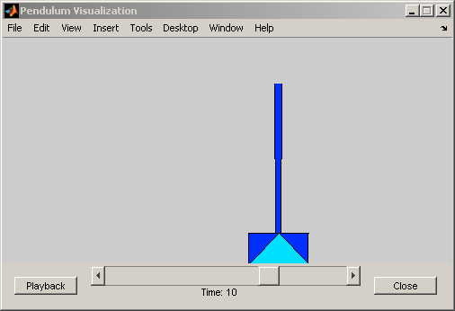
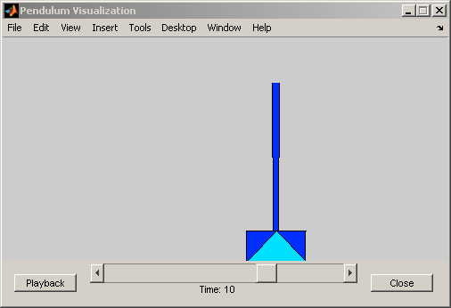

Inverted Pendulum with Animation
The animation is created using MATLAB® Handle Graphics®. The animation block is a masked S-function. For more information, use the context menu to look under the Animation block's mask and open the S-function for editing.
 
